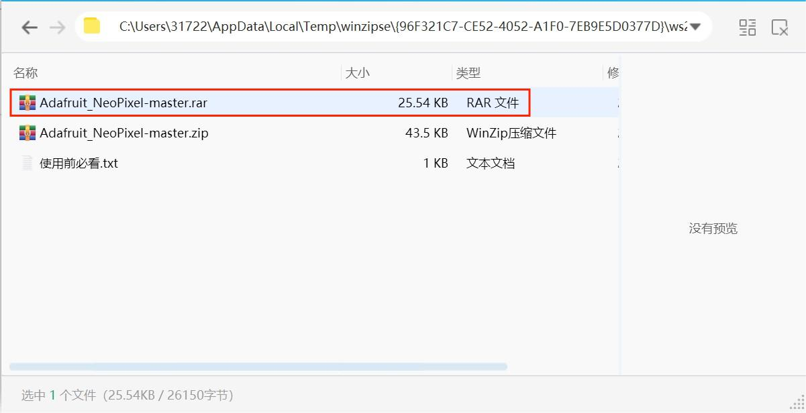
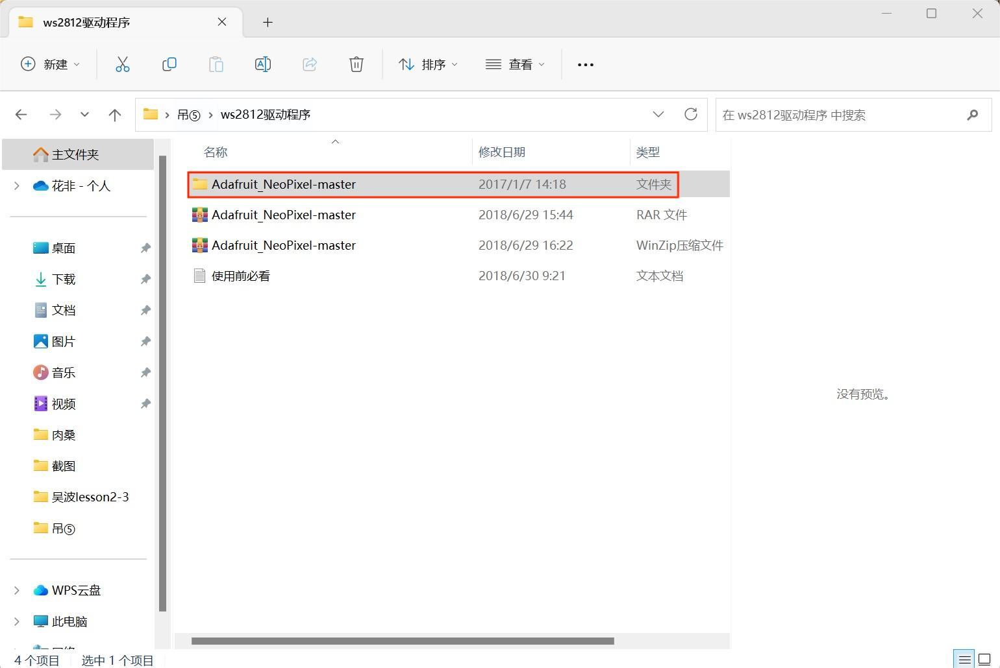
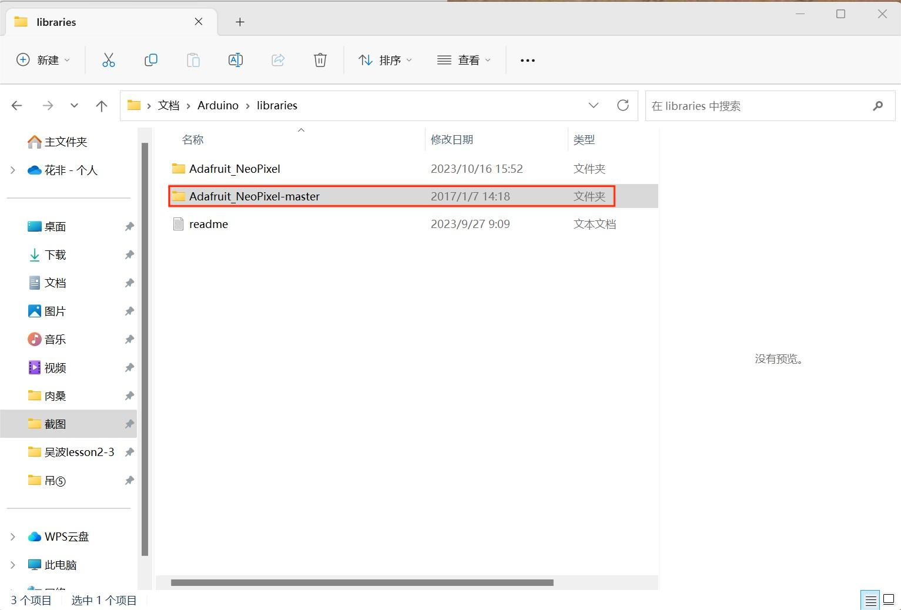
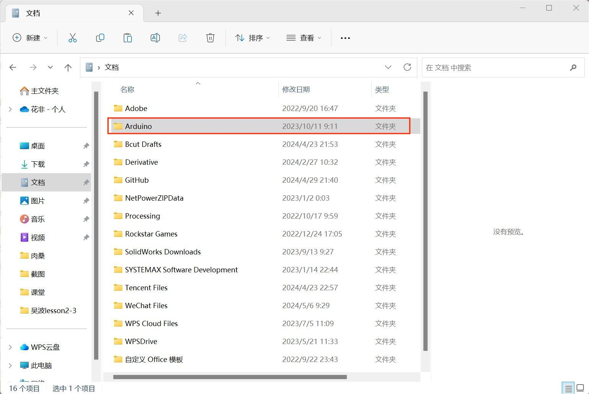
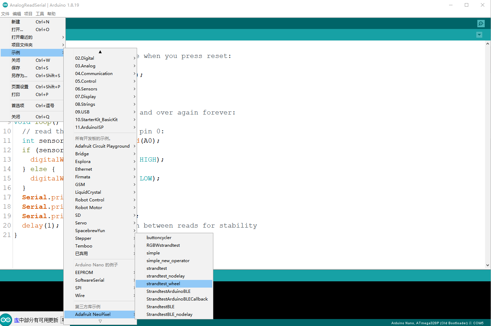

CM4 Nano edge computing Gateway (CM4 Nano edge computing gateway is extended with Raspberry PI CM4 core board,
supports high processing power, supports many scalability, supports AI computing expansion)
·ARM A72 1.5Ghz, 4-core, 64-bit
·Memory 1/2/4/8GB, eMMC 8/16/32GB
·WIFI/ Ethernet and other communication methods
1. Data access: Support a variety of brand PLC data transmission, 10W+ level of Internet of Things data transmission capability,
100% data authenticity, 99.9% access stability.
2. A variety of network functions: Support Ethernet, WIFI connection functions, with all-weather environment work ability.
3. Real-time edge computing: Integrate edge computing capabilities, obtain and process data faster, reduce cloud service costs,
reduce traffic losses, and achieve hardware-level security.
Because the wind turbine is expensive and the use environment is harsh, during the operation process, it is subject to the
comprehensive effect of various loads such as vibration and torsion for a long time, and the connecting fasteners between the
components and components will have different degrees of damage. The bolt monitoring system monitors the bolt status through
the sensor, calculates the gateway to process the sensor data in time, and makes a comparative analysis of the bolt status.
And timely report the data to the cloud through the network. Easy to monitor device status in real time
The Arduino IDE (Integrated Development Environment) is an open source software developed by the Arduino team for writing,
compiling, and uploading code to the Arduino microcontroller board. Arduino is a popular open source hardware platform
that includes various models of microcontroller boards and corresponding software libraries for controlling physical devices
and sensors.
a.Samples:The environment built-in example program can be opened. Arduino comes with a lot of programs, including the basics,
Digital,Analog and so on.
b.Preference:You can choose the compiler's language, set the font size of the compiler, adjust the font size of the code and
many other functions.
Edit the code, copy and paste, comment, indent, size, find and other functions
Load libraries - Manage libraries: You can search various support libraries in the installation network, select the library to
be installed and click Install to download and install online, which is very convenient.
A.Serial port monitor and serial port plotter: Their role is to receive the data sent by Arduino to the computer, and display
in the monitor can set the accepted baud rate, line feed, automatic scrolling, etc.
B.Development Board: Set the development board you use.
C.Port: Set the port required by the Arduino IDE download program, that is, the port through which the development board connects
to the compute
a.Compile: This button is used to check the correctness of your "syntax" or code. If your code has any syntax errors or undefined
variables, an error message will appear at the bottom of the IDE screen. At the same time, the offending line of code is marked
with a red background color for easy modification. But if it's correct, you'll see a message that the compilation is complete.
b.Upload: The most amazing button, through which we can upload the program to Arduino. Although the IDE will compile the code
before uploading, I think it is better to press the compile key before uploading.
c.New: Creates a blank page.
d.Open: This button allows you to open an existing draft and is used when you need to open a file that you have downloaded or used
before.
e.Save: Used to save your draft.
f.Serial monitor: that is, a serial port that can receive data sent by Arduino to the computer, often used for debugging code.
Arduino programming is mainly done in the C/C++ language, but in the Arduino environment, the structure of the code is somewhat
different from that of traditional C/C++ programs. In Arduino programs, there is no main() function, but the setup() and 'loop()'
functions are used as the starting point of the program and the body of the loop.
When the Arduino board is powered on or reset, the code in the setup() function executes immediately. This function is usually used
to perform initialization Settings, such as initializing variables, serial ports, I/O status, and so on. The code in the setup()
function is executed only once
After the setup() function is executed, the Arduino enters the loop() function, which is an infinite loop in which the code is executed
over and over again, allowing the Arduino to keep working. In the loop() function, the main functions of the program are usually
implemented, such as driving various modules and collecting data.
An example of a simple Arduino program for blinking LED lights on a control board is as follows:
void setup() {
pinMode(LED_BUILTIN, OUTPUT); // Set the built-in LED pin to output mode
}
void loop() {
digitalWrite(LED_BUILTIN, HIGH); // Pull the LED pin level high to light the LED
delay(1000); // Delay 1 second
digitalWrite(LED_BUILTIN, LOW); // Pull the LED pin flat and turn off the LED
delay(1000); // Delay 1 second
}
In this example, the setup() function initializes the built-in LED pin to output mode, the loop() function controls the switching of
the LED light through the digitalWrite() function, and the blinking frequency through the delay() function.
- Ensure that the Arduino board is properly connected to the computer and that the correct board and port are selected in the IDE.
- pinMode(), digitalWrite(), delay() and other functions in the code are special functions provided by Arduino to simplify hardware control.
- Debugging information can be easily printed in the IDE's Serial port monitor using functions such as serial.println ().
- Keep your code clear and easy to read, and use comments and indents wisely.
Arduino is a popular open source electronic prototyping platform that includes various models of Arduino boards and corresponding software
(Arduino IDE). The Arduino board is usually composed of a single chip microcomputer (such as the AVR series ATmega328P, or ESP32, etc.),
pins (for connecting other electronic modules and sensors), a power interface, and a serial port or USB interface to communicate with the
computer.
- MCU: The core of the Arduino board, responsible for processing the input data from the sensor and controlling the peripherals.
- Pins: Used to connect various electronic modules and sensors, each pin has a specific function, such as digital I/O, analog I/O, PWM, SPI,
I2C, etc.
- Power port: Provides power for the Arduino board and connected modules.
- Communication interface: such as USB and serial port, used to connect the Arduino board to the computer, upload and download data.
a. Connect the power supply: First make sure the Arduino board is properly connected to the power supply, usually 5V DC power supply.
b. Connect modules and sensors: Connect the required modules and sensors to the corresponding pins of the Arduino board using appropriate
interfaces (such as I2C, SPI, analog I/O, etc.).
c. Upload code: Write code and upload it to the board through the Arduino IDE to control the behavior of the hardware.
The GNU General Public License (GPL) is an open source license that starts with the open source and free use of code and the open source
and free trial of referenced, modified, and derived code. The main principle is to protect the user's freedom.
GPL1.0: Released February 25, 1989.
GPL2.0: Released in June 1991.
GPL3.0: Released June 29, 2007.
1. Software projects: Widely used for projects wishing to protect the freedom of their software
2. Open Source community: Encourage collaboration and sharing
Developers, businesses, educational institutions, non-profit organizations, etc
1. Freedom to run this program for any purpose
2. The freedom to modify the program for the purpose of learning how the program works (the prerequisite is that the source code is available)
3. Freedom to reissue copies
4. Improve the program, and the freedom to publish the improvements publicly (the source code is available)
5. The right to freely deal with derivative works
1. Users should follow the same protocol for open source
2. The original author does not assume the risk after the use of the code
3. There are mandatory inheritance requirements for licenses
1. The Linux operating system is licensed under the GPL, which allows millions of users and developers around the world to freely
use and modify the kernel.
2.GIMP is released under the GPL license, which allows users to freely use, copy, distribute, and modify the software without
paying any fees or complying with any restrictive terms.
Step1:the library file compression package is downloaded to the computer.
Step2:Compress the compressed package named Adafruit NeoPixel-master.rar with one click.
Step3:Find the folder you extracted
Step4:Open the folder named NeoPixel-master.rar
Step5:Find the folder named Ardunio in the folder named Adafruit NeoPixel-master.rar
Step6:Open the Arduino to find the sample in the edit, click Adafruit NeoPixel in the third party sample, and find the strandtest wheel
2.1 Sample code
#include <Adafruit_NeoPixel.h>
#ifdef __AVR__
#include <avr/power.h>
#endif
#define LED_PIN 6
#define LED_COUNT 60
Adafruit_NeoPixel strip(LED_COUNT, LED_PIN, NEO_GRB + NEO_KHZ800);
void setup() {
#if defined(__AVR_ATtiny85__) && (F_CPU == 16000000)
clock_prescale_set(clock_div_1);
#endif
strip.begin();
strip.show();
strip.setBrightness(50);
}
void loop() {
colorWipe(strip.Color(255, 0, 0), 50);
colorWipe(strip.Color( 0, 255, 0), 50);
colorWipe(strip.Color( 0, 0, 255), 50);
theaterChase(strip.Color(127, 127, 127), 50);
theaterChase(strip.Color(127, 0, 0), 50);
theaterChase(strip.Color( 0, 0, 127), 50);
rainbow(10);
theaterChaseRainbow(50);
}
void colorWipe(uint32_t color, int wait) {
for(int i=0; i<strip.numPixels(); i++) {
strip.setPixelColor(i, color);
strip.show();
delay(wait);
}
}
void theaterChase(uint32_t color, int wait) {
for(int a=0; a<10; a++) {
for(int b=0; b<3; b++) {
strip.clear();
for（int c=b; c<strip.numPixels（）; c += 3） {
strip.setPixelColor(c, color);
}
strip.show();
delay(wait);
}
}
}
void rainbow(int wait) {
for(long firstPixelHue = 0; firstPixelHue < 5*65536; firstPixelHue += 256) {
strip.rainbow(firstPixelHue);
strip.show();
delay(wait);
}
}
void theaterChaseRainbow(int wait) {
int firstPixelHue = 0;
for(int a=0; a<30; a++) {
for(int b=0; b<3; b++) {
strip.clear();
for（int c=b; c<strip.numPixels(); c += 3）{
Int hue = firstPixelHue + c*65536L / strip.numPixels();
uint32_t color = strip.gamma32(strip.ColorHSV(hue)); // hue -> RGB
strip.setPixelColor(c, color);
}
strip.show();
delay(wait);
firstPixelHue += 65536 / 90;
}
}
}
2.2 Debug code
#define LED_PIN 6
#define LED_COUNT 8
Adafruit_NeoPixel strip(8, 6, NEO_GRB + NEO_KHZ800);
The number of blocks changed from 60 to 8，Change the input PIN from LED PIN to 6.
These two drawings show the circuit diagram of the flow lamp
This picture shows the physical connection of the water lamp

This .gif shows the flow light in motion
This project aims to develop a daily emotional recovery tool that leverages the relationship between the body and emotions.
This is achieved through a glove device and screen image that can detect the sensitivity of human skin. The user touches
different parts of the body according to the instructions of the screen to achieve the effect of restoring emotions. People
are free to choose the appropriate sensitivity and get timely feedback from the information displayed on the screen.
It is very innovative, combining physical movement with emotion management, providing a new approach to emotional recovery.
The personalized experience is good, allowing individuals to adjust the sensitivity according to their own needs. Helps
users understand their emotional state.
It is not applicable to those who have physical reasons, such as disabled people.
The first use of the user will be less clear, less instructions
This project aims to help users release bad emotions through an interactive punching bag, which allows users to vent their
emotions through physical punching and gives visual feedback through the color changes of LED lights.
1.Easy to use
2.High entertainment
1. There are durability problems, the bag is easy to damage
2. Categorizing emotions has limitations
A wearable interactive device for children with autism, the device is a soft pillow that emits light and sound depending on
where the child is in contact with it. Through a Bluetooth-connected tablet, the operator can control the color of the light,
the pulsating rhythm of the light, and the sound it makes, creating multiple interactive experiences.
1. Very innovative, combining multiple senses, visual, auditory and tactile
2. Personalized experience Good through the control of the tablet computer, the light and sound Settings can be adjusted
according to the preferences and reactions of each child
3. Good portability
1. Data security and privacy are prone to problems
2. High cost
This is an innovative kitchen device designed to reduce food waste. It detects the freshness of food through a handheld sensor
equipped with an aroma detector and a small camera. The device is able to identify and analyze volatile organic compounds
(such as ethylene) released by food to determine if it is still suitable for consumption. When it detects that food may be
about to expire, it offers recipe suggestions via a small lip printer connected to it, encouraging users to make new dishes
using the ingredients rather than discarding them.
1. It's practical
2. Fun interaction, such as printing recipes
3. In line with the concept of sustainable development
1. Low accuracy and scope of application
2. Built-in camera has privacy issues
The lid uses PH-sensitive film technology to detect ammonia from protein degradation in food. When the food starts to spoil and
the concentration of ammonia rises, the film changes color to visually show the user whether the food is still fit for consumption.
1. High intuitiveness, clear color change
2. High accuracy
1. Limited detection of food deterioration processes other than protein degradation
2. Maintenance and replacement is required, and the workload is relatively large
3. If different types of food are mixed together, the film color change may lose accuracy due to the mixed gas.